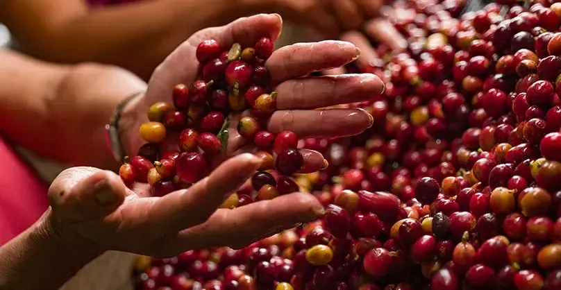

Historia del café
¿Cómo llegó el café a Colombia?
El café no nació en Colombia. Su origen está en otros territorios y con el tiempo llegó a América. En el caso colombiano, fue extendiéndose poco a poco hasta encontrar en las zonas andinas un lugar ideal para su cultivo, gracias al clima, la altura y la calidad de los suelos.
Con los años, muchas familias campesinas comenzaron a sembrarlo y a convertirlo en parte de su vida diaria. De esta manera, el café dejó de ser solo un cultivo y pasó a ser una actividad que organizó el trabajo, la economía y la identidad de muchas regiones del país.
En el Eje Cafetero, el café encontró un territorio especialmente favorable. Por eso esta región se volvió una de las más representativas de Colombia, no solo por la producción, sino también por la cultura, las tradiciones y los paisajes que se formaron alrededor del café.

Historia
Línea del tiempo del café
Origen del café
El café tuvo su origen fuera de Colombia y, con el paso del tiempo, llegó a América, donde empezó a cultivarse en distintos territorios.
Llegada a Colombia
El café llegó a Colombia y poco a poco empezó a sembrarse en regiones donde el clima, la altura y la tierra favorecían su crecimiento.
Expansión del cultivo
Muchas familias campesinas comenzaron a cultivar café y esta actividad se fue convirtiendo en parte de la economía y de la vida diaria.
Consolidación en el Eje Cafetero
El Eje Cafetero se fortaleció como una de las regiones más representativas del café gracias a su paisaje, su tradición y su producción.
Impacto cultural
El café dejó de ser solo un producto agrícola y pasó a formar parte de la identidad cultural, social y económica de la región.
El café en la actualidad
Hoy el café sigue siendo símbolo del Eje Cafetero y una herencia viva que une tradición, trabajo, paisaje y memoria.
Apoyo visual
Video sobre la historia del café
Este video complementa la información anterior y ayuda a entender mejor la historia del café
Video de apoyo sobre la historia del café